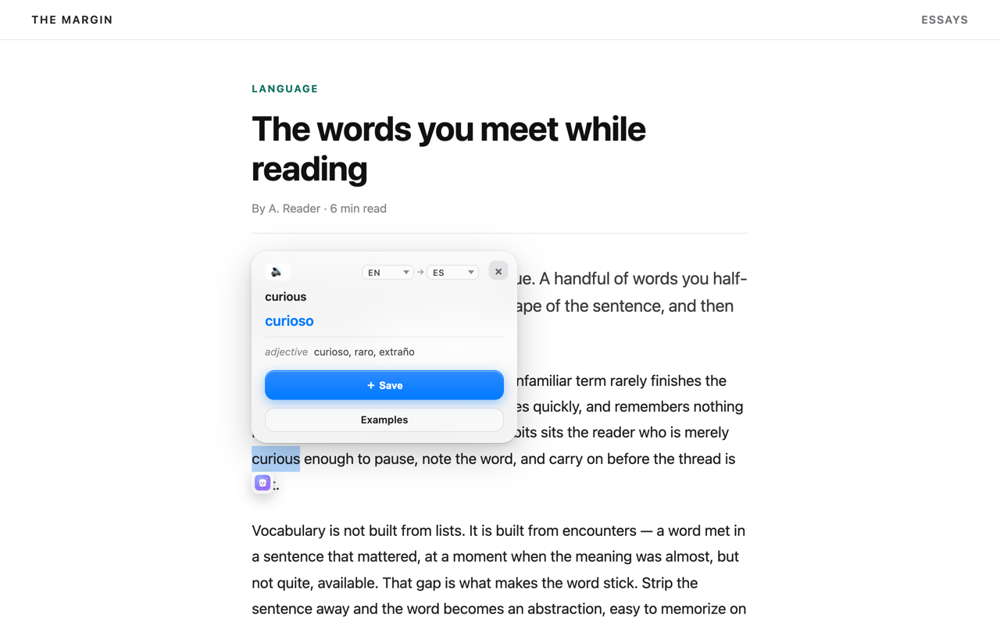
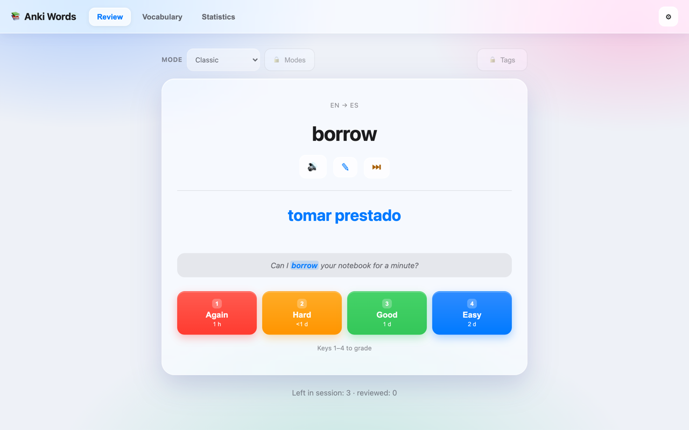
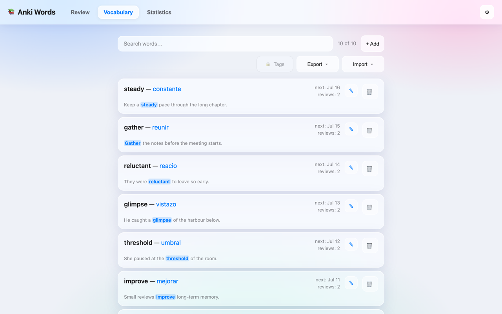

In-page lookup
Double-click a word, use the selection icon, or press Ctrl+Shift+L. The card shows parts of speech, audio, and English IPA.
Chrome extension for language learners
Translate a word on the page, save it with the sentence around it, and review it later.

How it works
Open any page in Chrome and keep reading.
Select a word or short phrase to see a compact translation.
Keep the word with the context where you found it.
Practice due words in short sessions.
Features
Look up words, save useful context, review them later, and keep your list under control.
Double-click a word, use the selection icon, or press Ctrl+Shift+L. The card shows parts of speech, audio, and English IPA.
Save the word with its translation, the sentence it came from, and a link back to the page.
Pull bilingual examples from Tatoeba and attach one as the card's context in a click.
Spaced repetition with SM-2. Grade each word Again, Hard, Good, or Easy when it comes back.
Set new words per day and a review cap, keep a daily streak, and opt into a reminder.
Saved words are marked when they turn up again on a page.
Search, edit, auto-tag by domain, import a CSV, export a spreadsheet, or take a full JSON backup.
Auto-detect the source. Translate on device with Chrome, or through Google or MyMemory.
No account and no API key. Saved words and review progress stay in your browser profile.
Screens
The extension stays close to the page you are reading and opens the larger review screen only when you need it.


Availability
The Chrome Web Store listing link will be added when the production listing is ready.